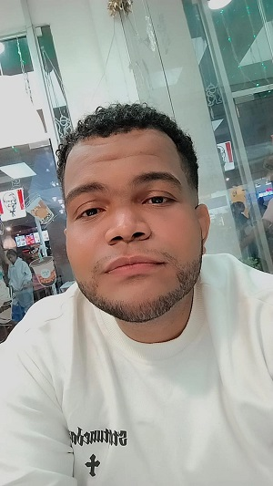

Juan Armando Lopez Mendez - - BiografíaEstudiante Licenciatura en Informatica -- Tester |
|

|
Juan Armando Lopez Mendez nacido el 07 de Marzo del 2000 en la ciudad de Santo Domingo, Republica Dominicana, es un estudiante y trabajador -Dominicano- del area de la tecnología de la información, en la universidad autonoma de Santo Domingo (UASD). |
Contexto Familiar |
|
Naci en Santo Domingo, Republica Dominicana, en el seno de una familia unida. Hijo del señor Juan Ernesto Lopez Feliz, Contador, oriundo de Barahona y la señora Unica Petronila Mendez Ramirez, Coordinadora de Tesoreria en el ministerio decultura de la Republica Dominica, oriunda de Padre las Casas - Azua. Tiene 4 hermanos y 4 hermanas: hermanos y hermanas solo de padre: Stewart Lopez (Doctor), Maria Isabel Lopez (Ama de Casa), Chenoha Lopez (Estudiante de cyberseguridad), Dylan Lopez (Estudiante), Adrian Lopez (estudiante) y Derek Lopez(infante). Hermanas de padre y madre: Perla Lopez (Estudiante de termino de derecho) y Pamela Lopez (Estudiante universitaria). Figuras importantes en mi infancia fueron mi abuela Ana Teresa Lopez y mi madre Unica Mendez, quienes siempre han velado por el bienestar de su familia sin importar lo que suceda y quienes a base de esfuerzo lograron todo lo que se propusieron. Crecí en un entorno humilde en todos los distintos sectores en los que viví, gran parte de estos en la casa de mi abuela materna. Mi comunidad se caracteriza por ser un lugar tranquilo, con personas trabajadoras y de buen corazón, donde todos se conocen y se apoyan mutuamente. Una comunidad en su amyoria catolica, donde se celebran las festividades religiosas con gran devoción y alegría. |
Formación Academica |
Universidad Autonoma de Santo DomingoEstoy realizando mis estudios de grado en la Universidad Autonoma de Santo Domingo desde el año 2019 en la carrera de Licenciatura en Informatica Liceo Otilio Virgil DiazRealice mis estudios de educación media desde segundo de bachiller hasta cuarto de bachiller. Liceo Max Henriquez UreñaRealice el primer grado de bachiller en este liceo con inclinacion a realizar un tecnico en el mismo. Escuela Socorro SanchezRealice mis estudios basicos desde Sexto curso hasta Octavo curso. Escuela Activo 20 - 30Realice mis estudios basicos desde primero hasta quinto curso. |
Formación Academica Complementaria |
English Inmersion Programm by Mescyt
Instituto SDQ Training Center
Instituto de Formacion Tecnico Profesional (INFOTEP)
PLATZI
CISCO ACADEMY
|
Trayectoria Profesional |
Centro Cristiano de Servicios MedicosActualmente me desempeño como Analista de Calidad en el Centro Cristiano de Servicios Medicos desde el 1 de Octubre del 2022, donde he tenido la oportunidad de aplicar mis conocimientos y habilidades en el área de aseguramiento de calidad y pruebas de software. |
Centro de Internet TerabyteMe desempeñe como servicio al cliente - vendedor - cajero durante 5 años en el Centro de Internet Terabyte desde el 2017 hasta el 2022, donde tuve la oportunidad de emprender en el mundo laboral. |
Produccion Intelectual o artistica |
|
En mi timepo libre suelo realizar dibujos, escribir ciertos libros e historias de uso personal. En el Liceo Otilio Virgil Diaz, desarolle proyectos artisticos como maquetar la Torre Eiffel en Tercero de bachiller (proyecto realizado a base de palitos de fosforos y ega) y Maquetar el puente Golden State de Estados Unidos (proyecto realizado a base de palitos de pinchos o hot dogs y palitos de fosforos). Recientemente he realizado una invitacion de bodas web para un familiar, la cual fue muy bien recibida por los novios y los invitados. |
Reconocimientos y logros |
|
Cuando estaba en octavo curso de educación basica, fui reconocido por la Escuela Socorro Sanchez como estudiante meritorio. Cuando estaba en primer grado de bachiller, fui reconocido por el Liceo Max Henriquez Ureña como estudiante meritorio. |
Aportes sociales y comunitarios |
|
No he tenido la oportunidad de realizar aportes sociales o comunitarios, pero en un futuro me gustaria poder hacerlo. |
Horario de clases |
| Día | Asignatura | Código | Sección | Horario | Maestro(a) |
|---|---|---|---|---|---|
| Lunes | Auditoría De Sist. Informáticos | INF 5230 | W04 | 4:00 PM - 5:00 PM | Rosa Elvira Liriano Blanco |
| Base De Datos II | INF 5200 | 03 | 5:00 PM - 9:00 PM | Jerson Rodriguez Jaquez | |
| Miércoles | Lab Lenguaje De Program III | INF 5170 | 01 | 7:00 AM - 9:00 AM | Radhames Silverio Gonzalez |
| Jueves | Base De Datos II | INF 5200 | 03 | 5:00 PM - 9:00 PM | Jerson Rodriguez Jaquez |